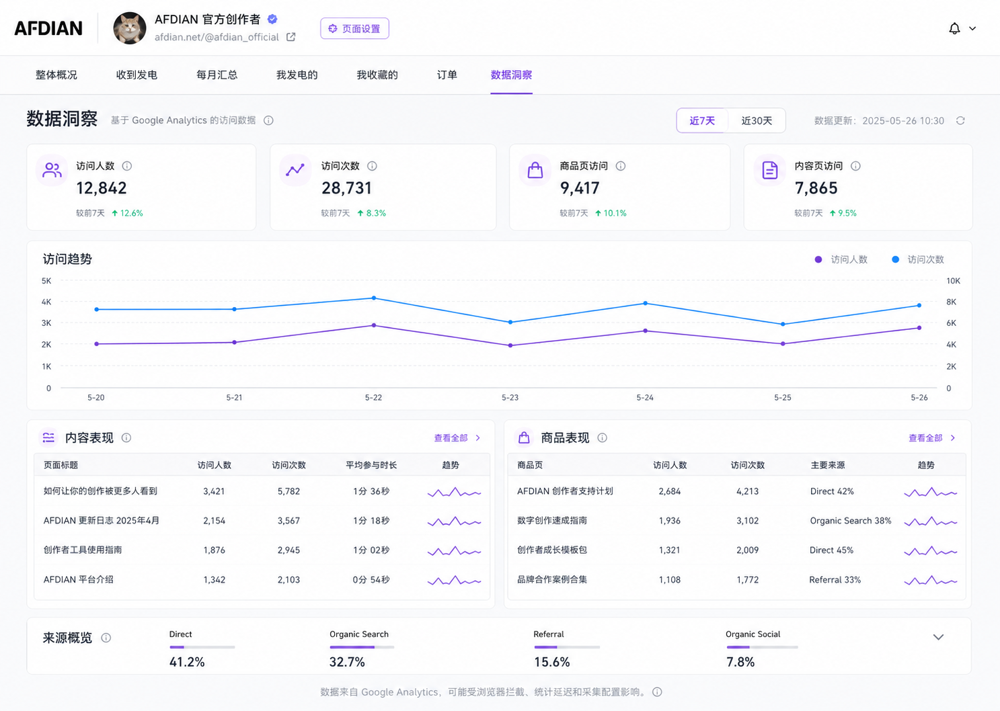
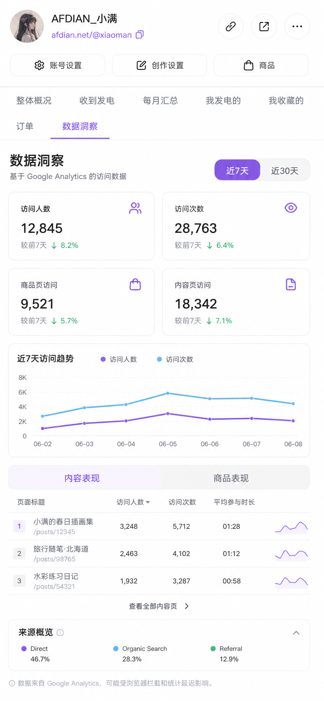

创作者数据洞察看板原型
轻量版内容与商品表现方向，数据项限定为 Google Analytics 可提供或可由 GA 事件产生的口径。
PC + 移动端静态原型
PC 原型
顶部创作者信息 + 横向 Dashboard Tab + 低密度内容/商品列表
移动端原型
2x2 摘要指标 + 单列趋势 + 内容/商品分段切换
口径说明：页面数据来自 Google Analytics，可能受浏览器拦截、统计延迟和采集配置影响；不展示单个访客身份或访问轨迹。